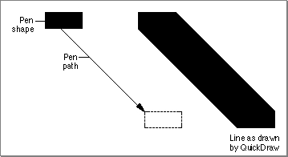
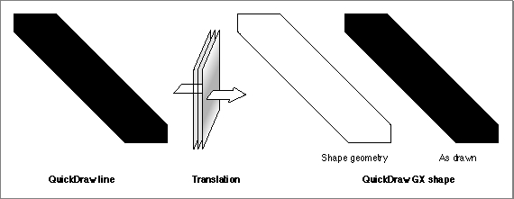
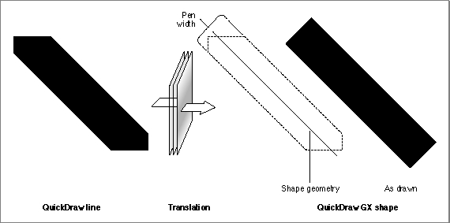
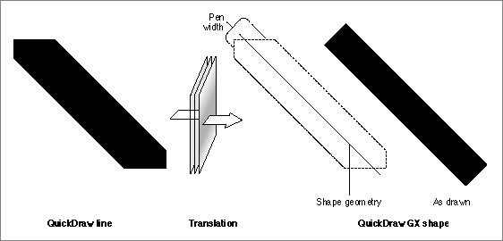
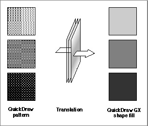
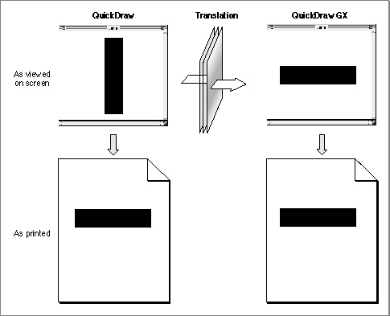

Legacy Document
Important: The information in this document is obsolete and should not be used for new development.
Important: The information in this document is obsolete and should not be used for new development.


Factors in Translation
This section describes some of the factors that influence the translation process, and how you can manipulate them.Graphics Port and View Port
The translation from QuickDraw to QuickDraw GX takes into account the current QuickDraw grafPort origin. Therefore, each resulting QuickDraw GX shape incorporates, either in its shape geometry or in its transform mapping, the origin of the graphics port that was active at the time of translation.The QuickDraw GX shape that results from the translation must be associated with a view port. This can be accomplished by
- setting the view port for each shape
- setting the view port for the parent picture shape of the individual shapes contained in a picture
Scaling During Translation
The translator allows you to scale the QuickDraw data as it is converted. For example, you can use scaling to convert from a screen resolution of 72 dpi to a printer resolution of 300 dpi. You specify the scaling factor in the form of source and destination rectangles.Also, in order to allow the translator to properly scale dash picture comments and other items, you can supply a pair of integer scale factors, which may be different in the x and y directions. The scale factors for both the source and destination rectangles and the pattern-stretch parameters are usually the destination resolution divided by the screen resolution (72 dpi), rounded to the nearest integer. Typical examples are shown in
Table 1-1.
Table 1-1 Translation scaling factors Source Destination Scale Factor 72 72 72 72 1 1 72 72 72 80 1 1 72 72 144 144 2 2 72 72 150 150 2 2 72 72 300 300 4 4 Translation Options
When you translate QuickDraw data to QuickDraw GX shapes, you specify one or more translation options. You can use either the default translation option provided by QuickDraw GX or a combination of the other available options. Some translation options provide simpler and faster translations, but with a resulting loss of pixel-for-pixel matching. Table 1-2 lists and describes the available translation options; the constants are defined in the gxTranslationOptions enumeration.How Option Settings Affect Translation of Lines
The translation of QuickDraw lines is affected by the translation options setting you choose. Consider the simple line generated by the QuickDraw commands given in Listing 1-2.Listing 1-2 QuickDraw commands to draw a simple line
PenSize(5, 3); MoveTo(100, 40); LineTo(120, 70);The QuickDraw commands in Listing 1-2 produce the line shown in Figure 1-2.Figure 1-2 A QuickDraw line[Missing image]

The
gxDefaultOptionsTranslationsetting produces the best replication of the original QuickDraw picture. However, it is also the slowest translation. If you use thegxDefaultOptionsTranslationsetting for the translation of the original QuickDraw line shown in Figure 1-2, the resulting QuickDraw GX polygon shape mimics the QuickDraw hanging pen. Furthermore, any scaling between the source and destination rectangles is incorporated into the translated shape's geometry. The original QuickDraw line would be translated to the QuickDraw GX shape shown in Figure 1-3.Figure 1-3 Translation of the QuickDraw line using
gxDefaultOptionsTranslation[Missing image] If you use the
gxSimpleGeometryTranslationoption setting, the resulting QuickDraw GX line shape runs along the center of the original QuickDraw line and covers all the pixels of the QuickDraw line and more; it is a superset. The resulting QuickDraw GX shape looks like the line shape shown in Figure 1-4.Figure 1-4 Translation of the QuickDraw line using
gxSimpleGeometryTranslation[Missing image]
If you use the
gxReplaceLineWidthTranslationoption setting, the resulting QuickDraw GX line shape has a width that is the average of the QuickDraw pen width and height. The line runs along the center of the original QuickDraw line between the extreme pixels at each end of the original QuickDraw line. The translation results in the QuickDraw GX shape shown in Figure 1-5.Figure 1-5 Translation of the QuickDraw line using
gxReplaceLineWidthTranslation[Missing image]
Translation of Fill Patterns
The QuickDraw-to-QuickDraw GX translator converts those 8-bit 8-bit QuickDraw fill patterns that are commonly used to represent gray patterns to colors that are blends of the foreground and background colors. In the case of QuickDraw black-and-white patterns, a uniform grayscale shade that ranges from 0 to 100 percent black is produced, depending on the overall apparent density of the original pattern, as shown in Figure 1-6.Figure 1-6 Conversion of standard QuickDraw fill patterns to QuickDraw GX shape fills[Missing image]

Translation of QuickDraw Picture Comments
The capabilities of QuickDraw GX exceed those of QuickDraw. This means that a picture comment (picComment) can be incorporated into the translated shapes as part of the conversion process. With QuickDraw alone, picture comments can only be seen when the picture is printed, because the comments are interpreted at the printer level.It is common practice for developers to include QuickDraw drawing commands (usually one or more bitmaps) within a picture comment as a proxy that provides an alternate representation of the picture comment. That way, if the
picCommentis not supported by a printer, some output--although at a lower resolution-- is produced.When processing a picture comment, the QuickDraw-to-QuickDraw GX translator typically discards the QuickDraw proxy and applies the
picCommentto the object--for example, by rotating the shape's transform or setting a dash in the shape's style. When processing PostScript picture comments, however, the translator creates a picture shape that contains QuickDraw GX shape objects (based on the QuickDraw proxies) as well as tag objects (containing the PostScript data). In this way, QuickDraw GX can render the picture both on a raster device (by drawing the items in the picture shape) and on a PostScript device (by applying the information in the tag objects).Sample code for applying a
picCommentfor rotation is shown in Listing 1-3.Listing 1-3 QuickDraw picture data that includes a
picComment
RotComHandle rInfo = NewHandle(sizeof(RotComRecord)); (*rInfo)->rFlip = 0 (*rInfo)->rAngle = 90; MoveTo(100,100); PicComment(RotateBegin, sizeof(RotComRecord), (Handle)rInfo); LineTo(100, 200); PicComment(RotateEnd, 0, nil);The output of the sample code in Listing 1-3 is shown in Figure 1-7. Notice that the QuickDraw screen output is not rotated. This is because QuickDraw picture comments are interpreted by the printer. In contrast, the printed QuickDraw output and the translated QuickDraw GX shape (both printed and displayed onscreen) correctly represent the intent of the original QuickDraw data.Figure 1-7 Translating QuickDraw data containing a rotation
picComment[Missing image]
Translation Statistics
The translator keeps various statistics about the QuickDraw picture data that it translates. You can examine these statistics after the translation if you are interested in this information. The statistics information is returned in the form of bit flags, as shown in Table 1-3.